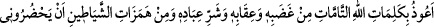

Katâde şöyle der: “Bize Rasûlullah (s.a.) döneminde bir adamın: “Allah’ım bana
âhirette vereceğin cezayı, âcilen dünyada ver.” dediği zikredildi. Bunun üzerine adam
şiddetli bir hastalığa yakalandı. Sonunda sanki bir deri bir kemik gibi kaldı. Onun
durumu Rasûlullah (s.a.)’e bildirildi. O da adamın yanına vardı. Hastanın başını
kaldırdı, hiçbir hareket yoktu. Orada bulunanlar: “Ey Allah’ın Rasûlü, bu adam şöyle
şöyle duâ ederdi.” dediler. Bunun üzerine Rasûlullah (s.a.) şöyle buyurdu: “Ey
Âdemoğlu, sen Allah’ın cezalandırmasına tahammül edemezsin. Fakat sen şöyle duâ
et: “Rabb’imiz, bize dünyada da güzellik ver, âhirette de güzellik ver, bizi ateş
azabından koru.” (el-Bakara, 2/201). Adam, böylece duâ etti ve hastalığı iyileşti.”[214]
Hâlid b. Velid (r.a.)’dan rivâyete göre o: “Ey Allah’ın Rasûlü, ben uykuda
korkutuluyorum.” dedi. Rasûlullah (s.a.):
“Allah’ın gazabına uğramaktan, O’nun cezâsından, kullarının şerrinden ve bana
gelmelerinden Allah’ın tam kelimelerine sığınırım.” de.” buyurdu.[215]
Mesnevî’de şöyle der:
Ona def edilmeyen bir belâ gelip çatar da
Onun yalvarıp yakaran şefâatçisi bulunmaz
Tevazu, kulluk ve düşkünlükten başka
Bu huzurda hiçbir şeyin itibarı yoktur
Güç kuvvet göstermeyi bırak da ağlayıp sızlamaya koyul
Merhamet ve acıma, ağlayıp sızlamalara gelir a zavallı yoksul
Darda kalmış susuzun ağlayıp inlemesi gerçektir
Âsî ve yoldan çıkmışın işi ise soğuk soğuk ağlayıştır
Yusuf ’un kardeşlerinin ağlaması hiledir
Çünkü yürekleri kıskançlık ve marazla doludur
[208]. Buhârî’nin verdiği bilgiye göre Mettâ, Yûnus (a.s)’ın annesinin adı değil,
babasının adıdır. Bk. Buhârî, Enbiyâ, 35; Tefsir, Nisâ 26; Müslim, Fezâil, 166; Ebû
Dâvud, Sünnet, 14.
[209]. Heysemî, Mecmau’z-zevâid, hadis no: 11746